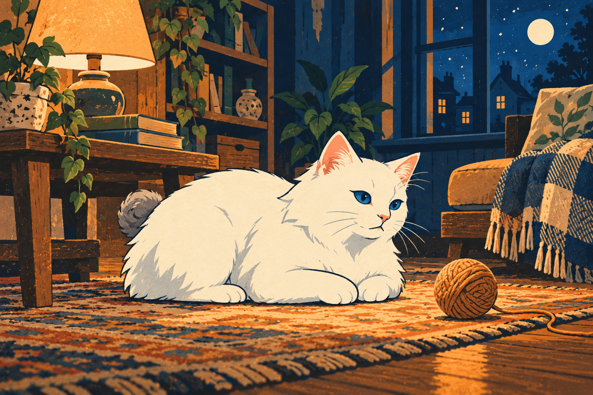
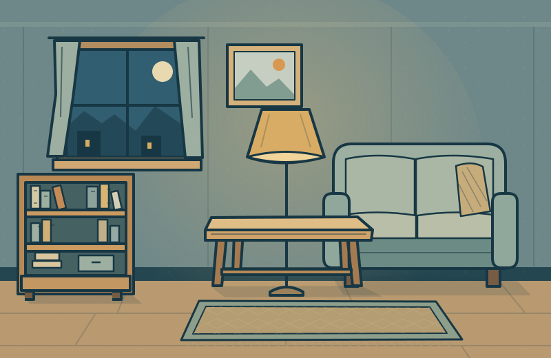

Игры с белым котом
Вечер
с котом.
Лампа горит, кот рядом.
Включи калимбу или тихое мурчание
и выбери, во что поиграть.

Кот и коробки
Толкай лёгкие коробки на коврики, открывай дверь. Сначала тесная комната, потом задача посложнее.
Играть ↗
По полочкам
Клубки к клубкам, миски к мискам. Забирай крайний предмет и находи для него место.
Попробовать ↗Настенная трасса
Поворачивай трубы, соединяй полки и гамаки. Лакомство ждёт на другой стороне.
Попробовать ↗
Что в миске?
Разбери большую тарелку: корм и угощения — коту, неподходящую еду — в мусор.
Играть ↗ 5 пробных уровней
5 пробных уровнейВечер с котом
Покормить, поиграть, попить и отдохнуть. Найди спокойный порядок домашних дел.
Попробовать ↗ ✧50 эпизодов
✧50 эпизодовЧистые лапы
Салфетка, щётка, вода и полотенце. Шерсть постепенно становится чистой.
Играть ↗Пары в лотке
Открывай ячейки совком и находи одинаковые формы. Часть мест пустая — запоминай находки.
Играть ↗Распутай клубок
Один клубок и одна нить. Тяни изгибы и свободный конец, убирая пересечения.
Играть ↗
50 уровней · 3 местаКуда пропало?
Комната, кухня и тихий двор. Слова, силуэты и ночной поиск с фонариком.
Попробовать ↗